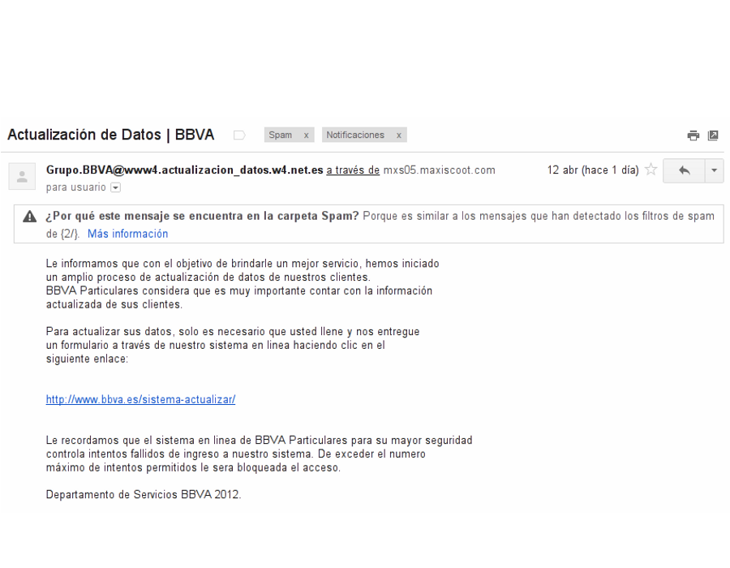
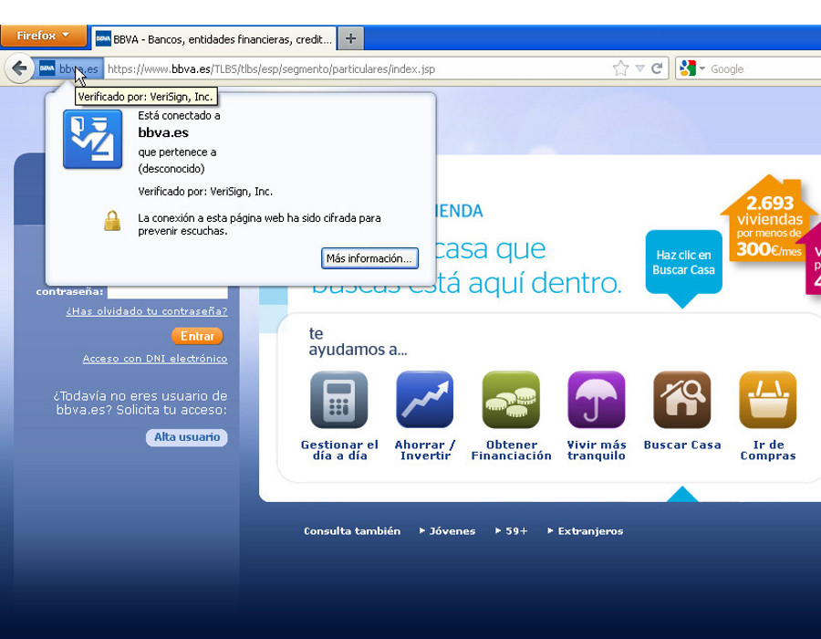

Universitat per a Majors
Seguridad
Conocer y evitar las amenazas en Internet
Apreta la tecla → para avanzar.
¿Es internet seguro?
NO. La libertad que nos ofrece
Internet a sus usuarios es su gran ventaja, y a su vez esta libertad
puede derivar en amenazas a nuestra seguridad.
Sin buscar el alarmismo, sí que es conveniente que
sepamos cuáles son las principales amenazas con los que nos puede
intimidar el uso diario de internet.
Virus, troyanos, SPAM, Malware, Phishing, robo de
información confidencial, suplantación de identidad.
Virus
Programa de ordenador capaz de replicarse entre
ordenadores mediante diversos sistemas, y cuya peligrosidad puede
variar desde inofensivo a muy peligroso.
Un virus puede ser tan inofensivo como no hacer nada más que
replicarse, o mostrarnos una
publicidad, a muy dañinos como borrar toda
la información de nuestro ordenador o robar nuestros datos personales
(tarjetas de crédito, contraseñas) y enviarlos a un atacante
remoto.
Virus: Prevención y desinfección
Tener instalado un programa de antivirus puede ayudarnos a
prevenir (o desinfectar) nuestro ordenador de las amenazas de
virus.
- Ventajas. Detecta los virus por sí mismo y
actualiza su base de datos automáticamente.
- Desventajas. Consumen mucha CPU y memoria, no
detectan el 100% de los virus.
- De pago: Mcafee, Panda, Norton.
- Gratuitos para uso particular: AVG, Avira, MSE.
Cambia de foto con las teclas: ↑ y ↓
¿Cuál es la forma más común de infección?
- Sistema operativo Windows. Es el sistema operativo donde más
abundan los virus.
- Internet Explorer. Es el navegador al
que más vulnerabilidades se le han detectado y el más castigado por
los virus.
- Lápices USB. Si el lápiz USB está
infectado el virus puede vulnerar nuestro equipo.
- Correos con adjuntos. Los adjuntos pueden
llevar virus, desconfiad de los correos extraños.
- Redes P2P. Las redes de intercambio de
archivos (películas, música) es donde más abundan los virus,
utilizad con precaución.
Cambia de foto con las teclas: ↑ y ↓
Tipos de amenazas por peligrosidad
- Malware. Programa que consigue acceso no
autorizado a nuestro equipo. Incluye muchos tipos de amenazas como
las siguientes.
- Adware. Un malware que una vez instalado nos
molesta sacando publicidad no deseada.
- Troyano. Programa silencioso que da acceso no
autorizado a nuestro equipo a un atacante remoto.
- Spyware. Programa silencioso que captura todas
nuestras pulsaciones de teclado, o envía información a un atacante
remoto.
Los antivirus suelen ser capaces de detectar todos
estos tipos de amenazas.
Amenazas al correo
A través del correo electrónico proliferan mucho los intentos de
engaño, plublicidad no deseada y suplantación de identidad.
- SPAM. Correos no deseados, normalmente
publicidad. Google nos proporciona maneras de
reportar aquellos correos que no son deseados.
- Phishing. Este tipo de amenaza es mucho más
peligrosa, ya que a través del correo intentarán engañarnos para
que proporcionemos datos confidenciales.

Cambia de foto con las teclas: ↑ y ↓
Prevención al phishing y al SPAM
- NUNCA te solicitarán datos privados por
correo. Ninguna entidad te va a solicitar datos
confidenciales por correo, por lo que si alguien te los solicita,
desconfía.
- Evita abrir correos escritos en inglés, o de remitentes
desconocidos. Leer el correo no puede infectar tu equipo,
pero abrir un adjunto sí, evita abrir adjuntos de los que no tengas
una confianza 100% de que no tienen virus.
- Utiliza las herramientas de Gmail para reportar SPAM y
Phishing.

Cambia de foto con las teclas: ↑ y ↓
Prevenir problemas
Seguro que os he puesto nerviosos/as con tantos problemas,
tranquilos/as, porque como todo en esta vida con un poco de sentido
común conseguiremos evitar la mayoría de problemas. Además, son las
propias entidades las que adoptarán medidas de seguridad por
nosotros:
- Nunca proporcionar a nadie el
usuario/contraseña. Y menos por correo electrónico o
teléfono.
- Evitad abrir adjuntos de correos, aunque el remitente
sea conocido. Las direcciones del remitente se pueden
falsificar.
- Asegurarse de que las conexiones van cifradas al
realizar operaciones electrónicas.
Conexiones cifradas
Las propias entidades interesadas adoptarán medidas de seguridad por
nosotros. Imaginaros una transacción bancaria que requiera mucha
seguridad.
- Conexión HTTP. Toda la transacción entre
nuestro ordenador y el servidor remoto podría ser escuchada por un
atacante.
- Conexión HTTPS. El canal de comunicaciones se
cifra y nadie más que las dos partes implicadas pueden escuchar la
conversación.

Cambia de foto con las teclas: ↑ y ↓
Protección adicional
Los navegadores modernos llevan una protección
adicional contra phishing y software malintencionado, que se actualiza
constantemente y nos alertaran ante cualquier amenaza cuando visitemos
un sitio web.
- Advertencia: Algo falla aquí. Esta alerta
aparece cuando el sitio que visitamos es sospechoso de contener
software malintencionado.
- Advertencia: Posible sitio de phishing. Esta
alerta indica que el sitio que visitamos puede estar intentando una
suplantación de identidad.
Cambia de foto con las teclas: ↑ y ↓